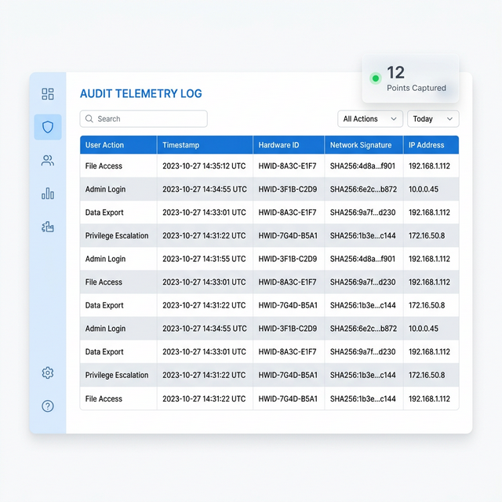
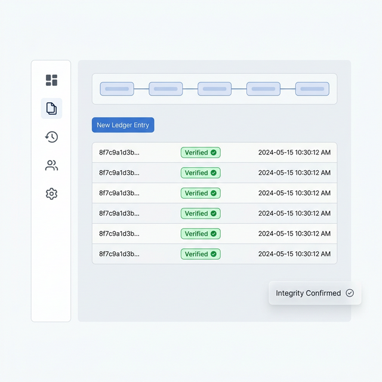

BrillSign automates the heavy lifting of regulatory oversight. From SOC2 and GDPR to specialized industry standards, we provide the technical controls and audit evidence you need to stay compliant by default.
Compliance isn't a one-time event; it's a constant state of readiness. BrillSign monitors every interaction to ensure your document ecosystem remains within specified guardrails.
We map every technical feature to specific regulatory risks, ensuring you have the coverage required for enterprise-grade operations.
Mitigated via cryptographic non-denial chain and multi-factor identity binding.
SHA-256 tamper-evident seals invalidate the document if a single bit is changed.
Geo-fenced signing standards ensure compliance with local contract laws.
Integrated Security Dashboard
In a borderless digital world, data residency is the new front line of compliance. BrillSign allows you to pin your data to specific geographic regions, ensuring you meet local laws (like GDPR or India's DPDPA) without sacrificing speed.
Your team shouldn't spend weeks preparing for an audit. BrillSign captures audit evidence in real-time, packaging it into machine-verifiable records.

We capture 12+ forensic telemetry points for every interaction, from hardware signatures to network latency, creating an unbreakable chain of identity proof.

Every artifact is hashed and anchored to a tamper-proof ledger. This ensures that records are mathematically proven to be original and uncurated.
When auditors call, generate a complete Regulatory Disclosure Package in one click. Instant SOC2/GDPR evidence export in a single verifiable ZIP.